laden...
Instagram is nog niet gekoppeld. Nu komt alleen nieuws van websites en YouTube binnen; Instagram volgt zodra de Meta-app er is.
BINNENGEKOMEN NIEUWS
PODCASTS
OPEN DE PODCASTSTUDIO →
POSTS
BRONNEN